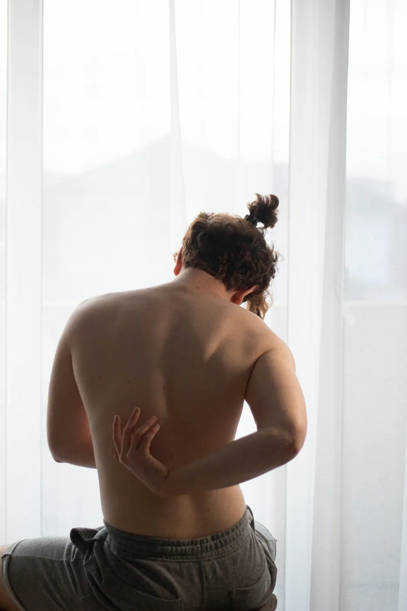

Não precisa de encaminhamento
Toque onde dói. Eu explico o caminho.
Consultório no Setor Marista, atendimento individual de 50 minutos. Toque num ponto das costas e veja o que costuma causar a dor e como tratamos.

Toque num dos quatro pontos das costas.
11 especialidades em um só lugar
- Ortopédicado pós-operatório ao retorno ao esporte
- RPGpostura e dor crônica
- NeurológicaAVC, Parkinson e lesões medulares
- Terapia manuale massagem terapêutica
- Acupunturador e ansiedade
- Geriátricaequilíbrio e prevenção de quedas
- Cardiorrespiratóriapós-covid e asma
- Reabilitação cardiopulmonarcom monitoração
- Quiropraxiaajustes articulares
- Ondas de choqueesporão e tendinites
- Consulta onlineorientação e exercícios em casa
Rua 9, 1155, Setor Marista
Goiânia/GO · segunda a sexta, 7h às 20h · sábado até 12h
Convênios: Unimed, Bradesco Saúde e particular com reembolso.